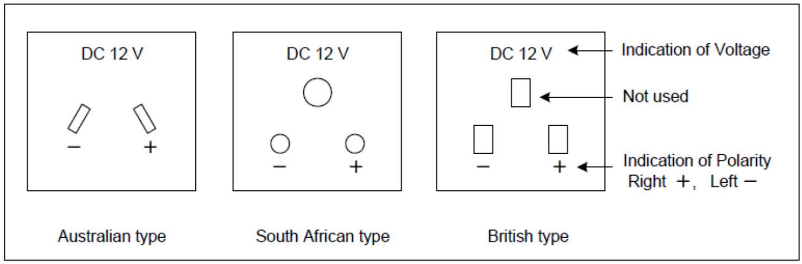
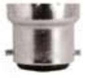
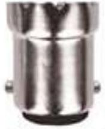
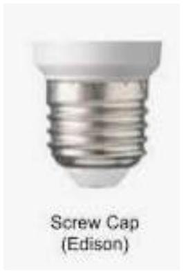
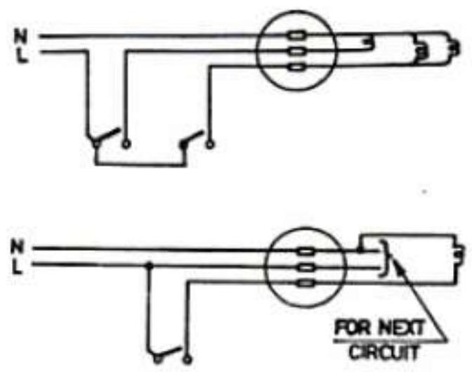

Accessories & Wiring Systems
TYPES OF ACCESSORIES
- AC and DC switches
- Socket outlets
- Lamps
- Lamp holders
- Ceiling roses
- Pattresses
- Consumer control unit
SWITCHES AND SOCKET OUTLETS
A switch is an electrical component that can disconnect or connect the conducting path in an electrical circuit. Since DC switches and power sockets are not available, AC switches and power sockets can be used for solar home systems.
Light switches and power sockets should be in wall-mounted pattress boxes
For power sockets right side is positive. It is necessary to avoid reverse polarity connections
A. Type of AC power socket suitable for DC use
B. Type of AC power socket NOT suitable for DC use
| This type is not suitable for DC since a plug is easily reversed. | ||
|---|---|---|
| DC 12 V - | $\square$ DC 12 V $\square$ | DC 12 V - |
| Europian type | US type | US type (Polarized) |
| There is a polarised US type socket, but unpolarised plug is easily available to this socket which polarity is not fixed. | ||
LAMPS
System designers should choose lights and appliances that meet their needs and that consume within the criteria of the system. Energy-efficient lamp and appliances choice will reduce the overall cost of solar and battery equipment.
Solar home systems recommend energy-saving lamps and appliances
LAMP HOLDERS
A lamp holder is a device that holds a light bulb or lamp. The lamp holder must be compatible with the type of bulb we want to use, with the wrong base selection will not fit in the lamp or fixture.
We have 2 types of lamp holders
i. Bayonet Cap Pin type
Bayonet
BC22 or B22
SBC15 or B15
ii. Edison Screw type
CEILING ROSES
Ceiling roses are used as tapping points from the wiring for supplying power to fans, lamps, etc. by means of flexible wires. Their use is restricted to voltages not exceeding 250 V
PATTRESSES
Pattresses usually means the box that sits behind electrical sockets and switches, though it has other meanings too. Modern electrical pattress boxes come in metal and plastic, and surface mount and flush version
- Deep pattress for sockets
- Shallow pattress for switches
CONSUMER UNITS
The consumer unit is responsible for powering all the circuits in your home and is made up of various parts, such as mains switch, residual current devices (RCD's), and circuit breakers.
WIRING SYSTEMS
A wiring system is an assembly of parts used in the formation of one or more electrical circuits. It consists of the conductor, together with its insulation, its protection against mechanical damage (sheathing and or armoring), certain wiring accessories for fixing the system, and joining and terminating the conductors.
TYPES OF WIRING SYSTEMS
- Sheathed wiring
- Conduit wiring
SHEATHED WIRING
This type of system consists of the conductors (cables) together with its insulation, its protection against mechanical damage (sheathing or armoring).
In sheathed wiring systems this method of wiring consists of an insulated conductor with a sheath which serves to some degree as a measure of protection against mechanical damage.
Types of sheathed wiring
- Tough rubber sheath
- Polyvinylchloride sheathed (PVC sheathed)
- Polychloroprene sheathed (PCP sheathed)
- Paper insulated lead covered sheath
TOUGH RUBBER SHEATH
This system is termed as an all insulated system because the sheath is an insulating material. The insulation is vulcanized rubber and the sheath is tough rubber.
POLYVINYLCHLORIDE SHEATHED (PVC SHEATHED)
This system is also insulated. the conductors are insulated with PVC and the sheath is PVC. Much inferior to rubber but has the advantage in that it's less affected by oil.
POLYCHLOROPRENE SHEATHED (PCP SHEATHED)
This plastic material was formed because neither P.V.C nor rubber was quite suitable for farm wiring where steam, lactic acid, and milk fats are present. The cable consists of conductors insulated with vulcanized rubber and sheathed with PCP.
PAPER INSULATED, LEAD SHEATHED
These cables are normally used for external underground distribution systems and internal distribution in factories and internal distribution systems. The paper is hygroscopic and must therefore be protected against the ingress of moisture by the use of cable sealing boxes.
Further protection against mechanical damage is provided by steel wire or tape
CONDUIT WIRING
The types of conduits commonly used are steel conduits and PVC conduits
It is important to note cables are drawn in after the conduits have been erected.
STEEL CONDUITS
Annealed mild steel tubing is very widely used for enclosing insulated cables. The conduit is normally annealed so that it may be bent or set to any angle without breaking. They are of two types
- Light gauge - made of lighter mild steel and can be easily bent into angles and shapes
- Heavy gauge - made of heavier (thicker) materials than light gauge. this is normally used for H.V cables.
PVC CONDUIT
The conduits are made of plastic (p.v.c). we have two types
- Heavy gauge (with red label indicated on the conduits)- recommended for most installations
- Light gauge (not recommended)
The conduits are bend into angles and shapes by use of a bending spring.
The conduits should not be installed on hot surfaces
FACTORS TO CONSIDER IN SELECTION OF A WIRING SYSTEM
Before any electrical installation is begun, some careful consideration must be given to the factors or conditions which decide the type of wiring systems, its associated accessories, etc. to be installed. The factors include; -
- The type of building - whether the wiring system is for a permanent building or a temporary building or the extension to an existing building.
- Flexibility - whether the installation system must be one that will allow it to be extended or altered at some point in the future.
- Installation conditions - whether the installation is likely to be subjected to mechanical damage, moisture, fumes weather, abnormal conditions, flammable gas, etc.
- Appearance - whether the building is such that the electrical installation must be hidden or its appearance can be allowed.
- Durability - whether the installation is to last for the time of the life of the building or not.
- Cost. Whether the amount of money available for the electrical installation is restricted or not.
- Safety. this is an extremely important aspect. the system must be safe for all i.e. from the point of view of supply and the earthing systems